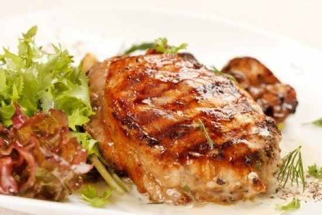

Chicken Steak RECIPE

DESCRIPTION
Bosan dengan olahan ayam ? Yuk mencoba membuat chicken steak untuk hidangan keluarga dengan bahan yang mudah dan sederhana. Umumnya steak terbuat dari daging sapi atau daging kambing, hanya saja kreasi yang satu ini tidak boleh dilewatkan membuat chicken steak yang praktis
INGRIDIENTS
- 3 buah paha ayam atas bawah,lalu buang tulangnya dan dibagi menjadi dua bagian
- 2 sendok teh merica hitam kasar
- 1/2 sendok teh baking powder
- 100 gram tepung terigu protein tinggi
- 1 sedok makan tepung sagu
- 1/4 sendok teh kaldu ayam bubuk
- 1 sendok teh garam
STEPS
- Langkah pertama yang harus anda kerjakan adalah marinasi ayam dengan menggunakan air jeruk lemon, garam dan juga merica, kurang lebih 10 menit
- Selanjutnya tepung terigu dicampurkan dengan tepung sagu,kaldu ayam bubuk tambahkan bakingn powder merica dan juga garam
Ambil ayam kemudian gulingkan ayam dengan campuran tepung terigu sambil diangkat-angkat.Lalu celupkan air es.
- Ambil ayam kemudian gulingkan lagi dengan campuran tepung terigu
- Lanjutkan dengan menggoreng minyak yang sudah dipanaskan hingga matang
- Sedangkan untuk membuat saus , langkah pertama panaskan margarin kemudian tumis bawang bombay hingga harum dan berubah warna
- Lanjutkan dengan tambahan tepung terigu. Aduk adonan hinggaberbutir. Tuang kaldu ayam sedikit demi sedikit sambil diaduk.
- Masukkan saus tomat ,jamur kancing, garam, merica hitam bubuk, dan juga gula pasir. Masak sambil diaduk hingga berubah menjadi kental
- Sajikan steak ayam bersama sausnya dengan bahan pelengkap sesuai dengan selera